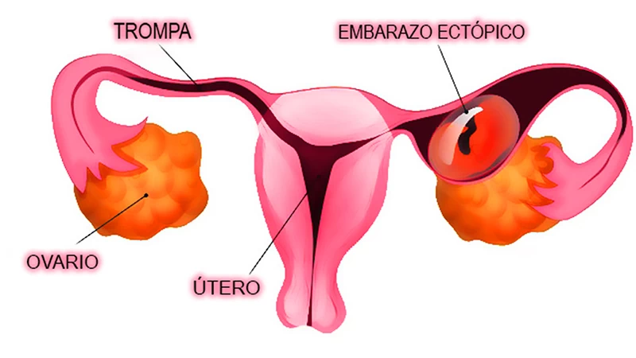

Los embarazos normales se desarrollan durante en el útero, después de que un ovulo viaja por las trompas de Falopio y se fija en el revestimiento uterino. En un embarazo ectópico se adhiere en alguna parte de las trompas de Falopio. También es considerado embarazo “embarazo tubárico”.
El embarazo ectópico también puede alojarse en los ovarios o en cualquier parte del abdomen de la paciente a gestar.
Los embarazos ectópicos en su mayoría son realizados alrededor de 2 entre 100 personas embarazadas, pero si no se tratan en su debido momento puede ser algo riesgoso, la trompa de Falopio puede estirarse y lograr romperse por el crecimiento del feto en su embarazo, eso podría tener graves consecuencias como una hemorragia interna, infección en algunos casos podría llevar hasta la muerte.
Es posible que no sientas nada desde un inicio de tu embarazo, sin embargo, hay mujeres que presenta algunos síntomas a temprana etapa del embarazo como sensibilidad abdominal, náuseas, falta de periodo menstrual
Si te harías una prueba de embarazo te será positivo, pero así el embarazo así no puede continuar con normalidad y en un futuro podría afectarte.
Los síntomas más comunes es que puede sentir dolor en lo que es la pelvis, abdomen o el lateral del cuerpo, Se pueden presentar otros síntomas como lo son el meteorismo, nausea o vómitos. Los que mantienen mayor presencia en un embarazo ectópico son los calambres o un sangrado anormal
Nunca se sabe cuáles son las causas de un embarazo ectópico, pero lo más probables son por estos puntos que hayas tenido anteriormente.
Casi siempre, ocurre unos dolores en la zona pélvica y también hay casos que ocurre un leve sangrado vaginal. Cuando hay fugas en las trompas de Falopio, aumentara tu dolor abdominal, se generar un malestar en la pelvis.
Si se genera un sangrado abundante (hemorragia), es posible que sientas dolor en los hombros a medida que la pelvis y el abdomen se llene de sangre, este síntoma dependerá de donde se acumule la sangre y que estén irritado los nervios.
En la mayoría de los casos de embarazos ectópico, se puede tener un embarazo saludable a futuro, siempre dependiendo de cómo hayas llevado tu tratamiento anteriormente y el estado de las trompas de Falopio, si tus trompas de Falopio se extrajeron o se encuentren cicatrizadas puede ser difícil que tengas un embarazo prospero.
Si tuviste un embarazo ectópico lo más probable que vuelvas a tener a futuro, consulta con tu medico profesional a cargo.
Si usted cree que puede tener un embarazo ectópico riesgoso, puede llamar a su médico y comentar las distintas opciones antes de quedar embarazada y así para que usted se quede más segura ante un embarazo ectópico, evitando fumar y utilizando preservativos para no quedarse embarazada
Si usted está embarazada y piensa que puede tener un embarazo ectópico, es importante hablar con su médico y descubrir un embarazo ectópico pronto y buscar soluciones que no afecten a su futuro.
Asesoramiento para un aborto seguro al whatsapp Hacer un consulta